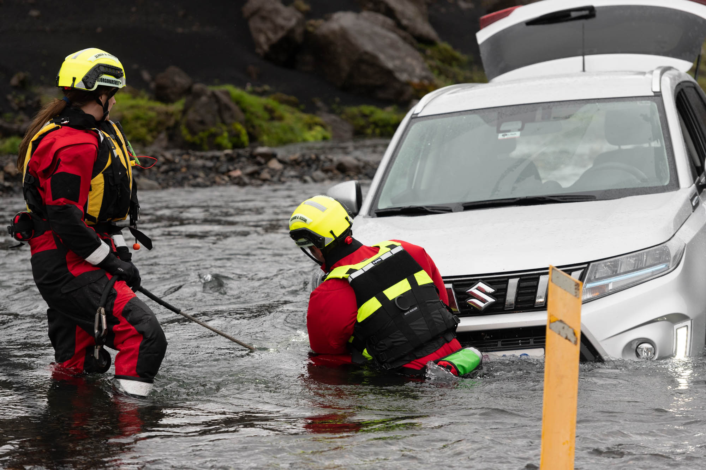

Volunteer Search and Rescue in North Iceland
We serve our community through search and rescue, safety education, preparedness, and volunteer-driven response.
Learn who we are and what we do.
Listen to stories, voices, and experiences from the field.
Watch training, rescues, and life inside the unit.
Support our volunteers and help keep us ready.
About Us
Skagfirðingasveit is part of Iceland's volunteer search and rescue tradition. Our work is rooted in preparedness, teamwork, training, and service.
We respond when people need help, support safety and prevention efforts, and welcome opportunities to share our work with visitors, schools, and groups.

Contact Us
Interested in visiting us with a school, group, or guests? We are happy to share our work, equipment, and facilities.
Contact Us